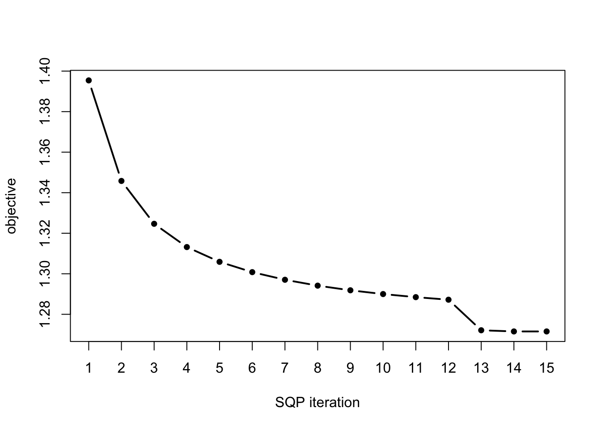
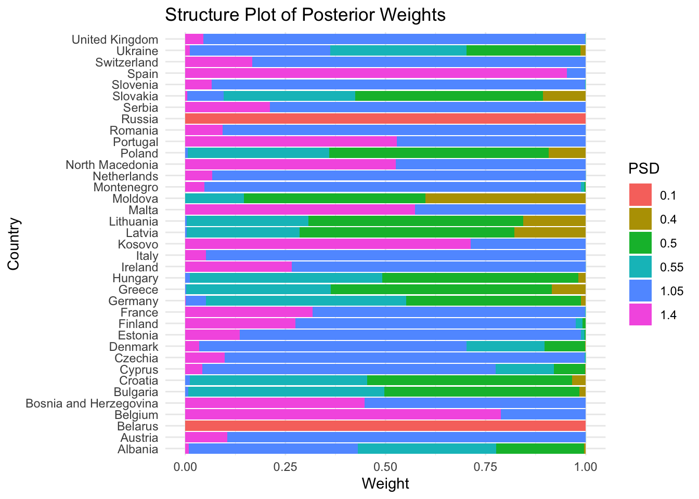
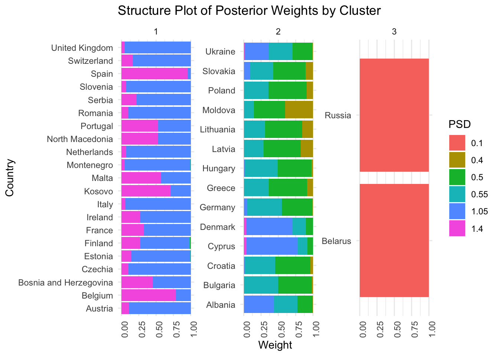
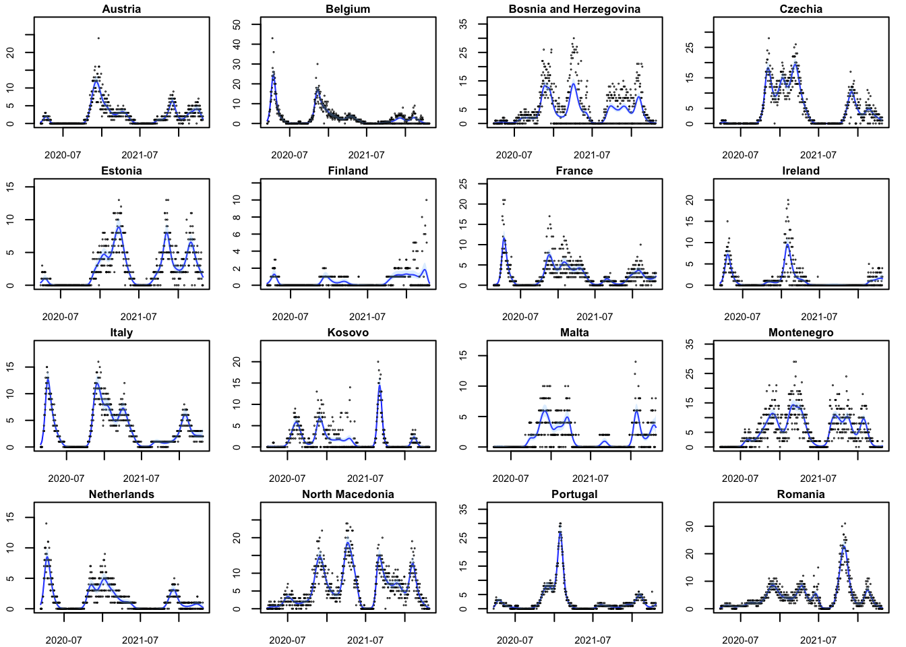
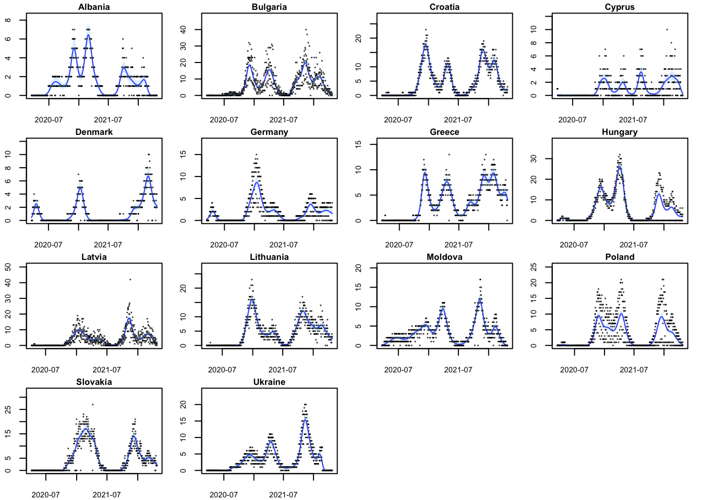
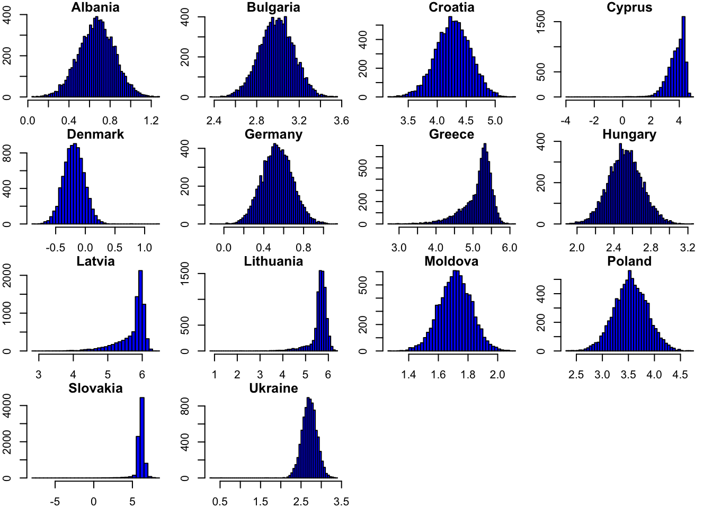
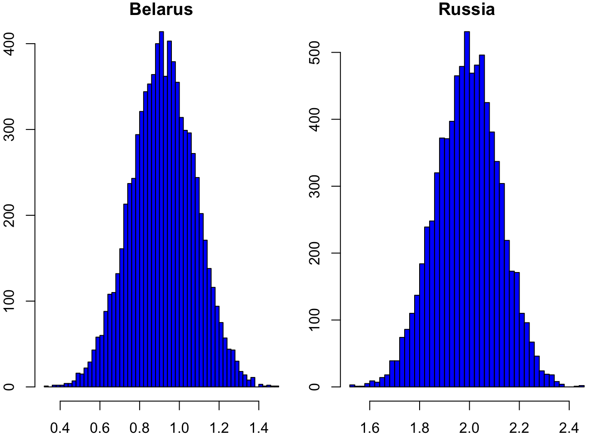

Example: COVID mortality data across countries
Last updated: 2024-05-10
Checks: 7 0
Knit directory: FASHresultsummary/
This reproducible R Markdown analysis was created with workflowr (version 1.7.1). The Checks tab describes the reproducibility checks that were applied when the results were created. The Past versions tab lists the development history.
Great! Since the R Markdown file has been committed to the Git repository, you know the exact version of the code that produced these results.
Great job! The global environment was empty. Objects defined in the global environment can affect the analysis in your R Markdown file in unknown ways. For reproduciblity it’s best to always run the code in an empty environment.
The command set.seed(20240507) was run prior to running
the code in the R Markdown file. Setting a seed ensures that any results
that rely on randomness, e.g. subsampling or permutations, are
reproducible.
Great job! Recording the operating system, R version, and package versions is critical for reproducibility.
Nice! There were no cached chunks for this analysis, so you can be confident that you successfully produced the results during this run.
Great job! Using relative paths to the files within your workflowr project makes it easier to run your code on other machines.
Great! You are using Git for version control. Tracking code development and connecting the code version to the results is critical for reproducibility.
The results in this page were generated with repository version 0f67dfb. See the Past versions tab to see a history of the changes made to the R Markdown and HTML files.
Note that you need to be careful to ensure that all relevant files for
the analysis have been committed to Git prior to generating the results
(you can use wflow_publish or
wflow_git_commit). workflowr only checks the R Markdown
file, but you know if there are other scripts or data files that it
depends on. Below is the status of the Git repository when the results
were generated:
Ignored files:
Ignored: .DS_Store
Ignored: .Rhistory
Ignored: .Rproj.user/
Ignored: analysis/.DS_Store
Ignored: analysis/.Rhistory
Ignored: code/.DS_Store
Ignored: code/function/.DS_Store
Ignored: output/.DS_Store
Ignored: output/example/.DS_Store
Ignored: output/example/figure/
Ignored: output/simulation/.DS_Store
Ignored: output/simulation/figure/
Untracked files:
Untracked: code/cpp/Gaussian_just_fixed.o
Untracked: code/cpp/Gaussian_just_fixed.so
Untracked: code/cpp/Gaussian_theta_known.o
Untracked: code/cpp/Gaussian_theta_known.so
Untracked: code/cpp/Poisson_covid.o
Untracked: code/cpp/Poisson_covid.so
Untracked: code/cpp/Poisson_just_fixed_covid.o
Untracked: code/cpp/Poisson_just_fixed_covid.so
Untracked: output/example/mod_datasets.rda
Note that any generated files, e.g. HTML, png, CSS, etc., are not included in this status report because it is ok for generated content to have uncommitted changes.
These are the previous versions of the repository in which changes were
made to the R Markdown (analysis/covid_example.Rmd) and
HTML (docs/covid_example.html) files. If you’ve configured
a remote Git repository (see ?wflow_git_remote), click on
the hyperlinks in the table below to view the files as they were in that
past version.
| File | Version | Author | Date | Message |
|---|---|---|---|---|
| Rmd | 0f67dfb | Ziang Zhang | 2024-05-10 | wflow_git_commit(c("analysis/covid_example.Rmd", "code/function/functions_fitting_Poisson_covid.R", |
| html | f25b5c4 | Ziang Zhang | 2024-05-08 | initialize the website again! |
| Rmd | 77c1aae | Ziang Zhang | 2024-05-08 | wflow_git_commit(c("analysis/covid_example.Rmd", "analysis/index.Rmd", |
| Rmd | 8a17f4d | Ziang Zhang | 2024-05-07 | wflow_git_commit(c("analysis/_site.yml", "analysis/covid_example.Rmd", |
Setup:
We consider the daily COVID-19 death count in different (European) countries. The data is obtained from COVID-19 Data Repository by the Center for Systems Science and Engineering (CSSE) at Johns Hopkins University (Dong, Du, and Gardner, 2020).
The number of COVID-19 deaths (per million) in each country is denoted as \(y_{i}(x_j)\), where \(i\) indexes the country and \(j\) indexes the day.
To model the true (log) mortality rate \(f_i(t_j)\), we assume that the death count \(y_{i}(x_j)\) is Poisson distributed with mean \(f_i(t_j)\): \[y_{i}(x_j) \sim \text{Poisson}(\exp(v_{ij}^T\boldsymbol{\beta}_i + f_i(x_j))),\] where \(v_{ij}\) is the fixed effect that denotes the weekdays.
Data:
We filtered out some countries/observations that look suspicious:
full_data_covid <- read.csv(file = paste0(data_dir, "/owid-covid-data.csv"), header = T)
full_data_covid <- full_data_covid %>% filter(date > "2020-01-01")
full_data_covid$y <- round(full_data_covid$new_deaths_per_million)
full_data_covid$quality <- abs((full_data_covid$y-full_data_covid$new_deaths_smoothed_per_million)/(full_data_covid$new_deaths_smoothed_per_million + 1))
full_data_covid$Date <- as.Date(full_data_covid$date)
full_data_covid$x <- (as.Date(full_data_covid$date) %>% as.numeric())/31
## Assume COVID death rate is approximately 0 at time 2020-01-01, so set intercept being -3. Also, assume the derivatives are all zero at this point.
full_data_covid$x <- full_data_covid$x - (as.numeric(as.Date("2020-01-01"))/31)
full_data_covid$weekdays <- weekdays(as.Date(full_data_covid$date))
full_data_covid$weekdays <- factor(full_data_covid$weekdays,
levels = c("Monday", "Tuesday", "Wednesday", "Thursday", "Friday", "Saturday", "Sunday"),
ordered = F)
full_data_covid_EU <- full_data_covid %>% filter(continent == "Europe") %>% select(Date, x, y, weekdays, location, iso_code, quality)The final selected countries/data are:
datasets <- list()
available_countries <- unique(full_data_covid_EU$location)
selected_countries <- c()
for (country in available_countries) {
full_data <- full_data_covid_EU %>% filter(location == country, !is.na(y), !is.na(quality))
full_data <- full_data %>% filter(quality <= 1.0, y != 0)
if(sum(full_data$y != 0) < 300) {
next
}
else{
selected_countries <- c(selected_countries, country)
datasets[[country]] <- full_data %>% arrange(Date)
}
}
par(mfrow = c(6, 6), mar = c(2, 2, 1, 1)) # Adjust margins as needed
for (i in 1:34) {
plot(datasets[[i]]$x, (datasets[[i]]$y), type = 'p', # Change to 'p' for points
main = paste0(selected_countries[i]), xlab = "x", ylab = "y",
cex = 0.1,
cex.main = 0.8, cex.lab = 0.7, cex.axis = 0.7) # Adjust text size as needed
}
par(mfrow = c(1, 1), mar = c(5, 4, 4, 2) + 0.1)
| Version | Author | Date |
|---|---|---|
| 574c0a1 | Ziang Zhang | 2024-05-08 |
Empirical Bayes:
We compute the L-matrix and use EB to optimize the prior weights:
p_vec <- 3
log_prec_vec <- sort(unique(c(seq(0, 5, by = 0.1), seq(5, 10, by = 1), seq(-5,0, by = 1))))
psd_iwp_vec <- exp(-.5*log_prec_vec)
L_vecs <- mclapply(datasets, function(dataset) {
compute_log_likelihood_ospline_seq2(
dataset = dataset,
p = p_vec,
num_knots = 50,
psd_iwp_vector = psd_iwp_vec,
pred_step = 1,
betaprec = 0.0001
)
}, mc.cores = num_cores)
L_matrix <- do.call(rbind, L_vecs)fit.sqp <- mixsqp(L = L_matrix, log = TRUE)Running mix-SQP algorithm 0.3-54 on 34 x 61 matrix
convergence tol. (SQP): 1.0e-08
conv. tol. (active-set): 1.0e-10
zero threshold (solution): 1.0e-08
zero thresh. (search dir.): 1.0e-14
l.s. sufficient decrease: 1.0e-02
step size reduction factor: 7.5e-01
minimum step size: 1.0e-08
max. iter (SQP): 1000
max. iter (active-set): 20
number of EM iterations: 10
Computing SVD of 34 x 61 matrix.
Matrix is not low-rank; falling back to full matrix.
iter objective max(rdual) nnz stepsize max.diff nqp nls
1 +1.538397161e+00 -- EM -- 58 1.00e+00 2.28e-02 -- --
2 +1.509279945e+00 -- EM -- 58 1.00e+00 7.27e-03 -- --
3 +1.499756515e+00 -- EM -- 57 1.00e+00 4.72e-03 -- --
4 +1.495089189e+00 -- EM -- 57 1.00e+00 3.74e-03 -- --
5 +1.492096433e+00 -- EM -- 57 1.00e+00 3.12e-03 -- --
6 +1.489901914e+00 -- EM -- 57 1.00e+00 2.65e-03 -- --
7 +1.488195224e+00 -- EM -- 57 1.00e+00 2.23e-03 -- --
8 +1.486832613e+00 -- EM -- 57 1.00e+00 1.83e-03 -- --
9 +1.485729526e+00 -- EM -- 57 1.00e+00 1.74e-03 -- --
10 +1.484827268e+00 -- EM -- 56 1.00e+00 1.67e-03 -- --
1 +1.484081530e+00 +2.995e-02 56 ------ ------ -- --
2 +1.483090543e+00 +2.737e-02 36 1.00e+00 1.77e-02 20 1
3 +1.482635217e+00 +2.544e-02 16 1.00e+00 1.16e-01 20 1
4 +1.470402456e+00 +2.006e-03 8 1.00e+00 2.38e-01 20 1
5 +1.470218700e+00 +2.595e-05 8 1.00e+00 1.41e-01 5 1
6 +1.470218699e+00 -3.290e-08 8 1.00e+00 9.04e-05 2 1
Optimization took 0.00 seconds.
Convergence criteria met---optimal solution found.numiter <- nrow(fit.sqp$progress)
plot(1:numiter,fit.sqp$progress$objective,type = "b",
pch = 20,lwd = 2,xlab = "SQP iteration",
ylab = "objective",xaxp = c(1,numiter,numiter - 1))
| Version | Author | Date |
|---|---|---|
| 574c0a1 | Ziang Zhang | 2024-05-08 |
prior_weight <- data.frame(p = rep(p_vec, each = length(psd_iwp_vec)), psd_iwp = psd_iwp_vec, prior_weight = fit.sqp$x)Posterior Inference:
We carry out the posterior computation based on Finite Element Method and Laplace approximation:
num_datasets <- length(datasets)
num_weights <- sum(prior_weight$prior_weight != 0)
posterior_weights_matrix <- matrix(nrow = num_datasets, ncol = num_weights)
# Loop through each dataset and perform fitting
fitted_datasets <- list()
for (i in seq_along(datasets)) {
dataset <- datasets[[i]]
fit_result_final <- fit_ospline_with_prior2(
num_cores = num_cores,
dataset = dataset,
num_knots = 50,
prior_weight = prior_weight,
betaprec = 0.0001,
pred_step = 1
)
posterior_weights_matrix[i, ] <- fit_result_final$posterior_weights[, "posterior_weight"]
fitted_datasets[[i]] <- aggregate_fit_with_prior(x = dataset$x, fit_results_with_prior = fit_result_final, original = TRUE)$summary_df
}
names(fitted_datasets) <- selected_countries
colnames(posterior_weights_matrix) <- paste(as.character(fit_result_final$posterior_weights[, "p"]),
as.character(fit_result_final$posterior_weights[, "psd_iwp"]), sep = "_")First, take a look at the structure plot of the posterior weights:
posterior_weights_df <- as.data.frame(posterior_weights_matrix)
posterior_weights_df$id <- 1:nrow(posterior_weights_df)
melted_data <- melt(posterior_weights_df, id.vars = "id")
melted_data$variable2 <- sub("_.*", "", melted_data$variable)
melted_data$variable3 <- as.factor(round(as.numeric(sub("*._", "", melted_data$variable)), 3))
melted_data$id <- selected_countries
ggplot(melted_data, aes(x = as.factor(id), y = value, fill = variable3)) +
geom_bar(stat = "identity") +
labs(x = "Country", y = "Weight", fill = "PSD") +
theme_minimal() +
ggtitle("Structure Plot of Posterior Weights") +
coord_flip() 
| Version | Author | Date |
|---|---|---|
| 574c0a1 | Ziang Zhang | 2024-05-08 |
There are many suggested structures for the posterior weights. Let’s group them into \(4\) clusters using the hierarchical clustering method:
# Normalize the data
wide_data <- scale(posterior_weights_matrix)
# Perform hierarchical clustering
d <- dist(wide_data, method = "euclidean") # Distance matrix
fit <- hclust(d, method = "ward.D2") # Clustering
clusters <- cutree(fit, k = 4)
## Recode the factor so cluster 2 be 1, 1 be 2, 4 be 3, 3 be 4
clusters <- as.numeric(factor(clusters, levels = c(2, 1, 4, 3), labels = c(1, 2, 3, 4)))
melted_data$cluster <- clusters
posterior_weights_df$id <- 1:nrow(posterior_weights_df)
posterior_weights_df$cluster <- clusters
melted_data <- melt(posterior_weights_df, id.vars = c("id", "cluster"))
melted_data$variable2 <- sub("_.*", "", melted_data$variable)
melted_data$variable3 <- as.factor(round(as.numeric(sub("*._", "", melted_data$variable)), 3))
melted_data$id <- selected_countries
melted_data <- melted_data %>% arrange(cluster)
ggplot(melted_data, aes(x = id, y = value, fill = variable3)) +
geom_bar(stat = "identity") +
facet_wrap(~cluster, scales = "free_y") + # Facet by cluster
labs(x = "Country", y = "Weight", fill = "PSD") +
theme_minimal() +
theme(axis.text.x = element_text(angle = 90, hjust = 1)) + # Rotate x-axis labels for better readability
ggtitle("Structure Plot of Posterior Weights by Cluster") +
coord_flip() 
| Version | Author | Date |
|---|---|---|
| 574c0a1 | Ziang Zhang | 2024-05-08 |
Note that group 1 mostly consists of countries in western Europe, group 2 and group 3 mostly consists of countries in eastern Europe.
Let’s visualize the smoothing result for each cluster. For cluster 1:
cluster1_countries <- selected_countries[clusters == 1]
cluster2_countries <- selected_countries[clusters == 2]
cluster3_countries <- selected_countries[clusters == 3]
cluster4_countries <- selected_countries[clusters == 4]
par(mfrow = c(4, 4), mar = c(2, 2, 1, 1))
for (country in cluster1_countries[1:16]) {
agg_result <- fitted_datasets[[country]]
plot(datasets[[country]]$Date, agg_result$median, type = 'l',
main = paste0(country), xlab = "", ylab = "", col = "blue",
cex = 0.5, ylim = c(0,max(datasets[[country]]$y)*1.2),
cex.main = 0.8, cex.lab = 0.7, cex.axis = 0.7)
points(datasets[[country]]$Date, datasets[[country]]$y, col = "black", cex = 0.1)
polygon(c(datasets[[country]]$Date, rev(datasets[[country]]$Date)),
c(agg_result$lower, rev(agg_result$upper)),
col = rgb(0.6, 0.8, 1, alpha = 0.3), border = NA)
}
| Version | Author | Date |
|---|---|---|
| 574c0a1 | Ziang Zhang | 2024-05-08 |
For cluster 2:
par(mfrow = c(4, 3), mar = c(2, 2, 1, 1))
for (country in cluster2_countries[1:11]) {
agg_result <- fitted_datasets[[country]]
plot(datasets[[country]]$Date, agg_result$median, type = 'l',
main = paste0(country), xlab = "", ylab = "", col = "blue",
cex = 0.5, ylim = c(0,max(datasets[[country]]$y)*1.2),
cex.main = 0.8, cex.lab = 0.7, cex.axis = 0.7)
points(datasets[[country]]$Date, datasets[[country]]$y, col = "black", cex = 0.1)
polygon(c(datasets[[country]]$Date, rev(datasets[[country]]$Date)),
c(agg_result$lower, rev(agg_result$upper)),
col = rgb(0.6, 0.8, 1, alpha = 0.3), border = NA)
}
| Version | Author | Date |
|---|---|---|
| 574c0a1 | Ziang Zhang | 2024-05-08 |
For cluster 3:
par(mfrow = c(3, 2), mar = c(2, 2, 1, 1))
for (country in cluster3_countries[1:6]) {
agg_result <- fitted_datasets[[country]]
plot(datasets[[country]]$Date, agg_result$median, type = 'l',
main = paste0(country), xlab = "", ylab = "", col = "blue",
cex = 0.5, ylim = c(0,max(datasets[[country]]$y)*1.2),
cex.main = 0.8, cex.lab = 0.7, cex.axis = 0.7)
points(datasets[[country]]$Date, datasets[[country]]$y, col = "black", cex = 0.1)
polygon(c(datasets[[country]]$Date, rev(datasets[[country]]$Date)),
c(agg_result$lower, rev(agg_result$upper)),
col = rgb(0.6, 0.8, 1, alpha = 0.3), border = NA)
}
| Version | Author | Date |
|---|---|---|
| 574c0a1 | Ziang Zhang | 2024-05-08 |
For cluster 4:
par(mfrow = c(1, 1), mar = c(2, 2, 1, 1))
for (country in cluster4_countries[1:1]) {
agg_result <- fitted_datasets[[country]]
plot(datasets[[country]]$Date, agg_result$median, type = 'l',
main = paste0(country), xlab = "", ylab = "", col = "blue",
cex = 0.5, ylim = c(0,max(datasets[[country]]$y)*1.2),
cex.main = 0.8, cex.lab = 0.7, cex.axis = 0.7)
points(datasets[[country]]$Date, datasets[[country]]$y, col = "black", cex = 0.1)
polygon(c(datasets[[country]]$Date, rev(datasets[[country]]$Date)),
c(agg_result$lower, rev(agg_result$upper)),
col = rgb(0.6, 0.8, 1, alpha = 0.3), border = NA)
}
| Version | Author | Date |
|---|---|---|
| 574c0a1 | Ziang Zhang | 2024-05-08 |
Summary: Overall, many countries (mostly western Europe) in cluster 1 were seriously affected by the initial wave. Whereas countries in cluster 2 and 3 (mostly eastern Europe) were significantly less affected during the first initial wave.
Follow-up Question: What countries were more affected by the Delta wave than the initial wave? Select based on the false sign rate.
Let’s define the following time periods as initial wave and Delta wave:
refined_time <- seq(as.Date("2020-01-01"), as.Date("2022-04-26"), by = 1)
refined_x <- (as.numeric(refined_time)/31) - (as.numeric(as.Date("2020-01-01"))/31)
## Initial time:
initial_wave <- c(as.Date("2020-03-01"), as.Date("2020-11-01"))
initial_index <- which(refined_time >= initial_wave[1] & refined_time <= initial_wave[2])
## Delta time:
delta_wave <- c(as.Date("2021-07-01"), as.Date("2022-01-01"))
delta_index <- which(refined_time >= delta_wave[1] & refined_time <= delta_wave[2])
extract_posterior <- function(fit_result, refined_x){
func <- function(path){
max(path[delta_index]) - max(path[initial_index])
}
intercept <- -3
coef_samples <- fit_result$samps_coef
B_new <- BayesGP:::local_poly_helper(knots = fit_result$knots, refined_x = refined_x, p = fit_result$p)
samps_fitted <- as.matrix(B_new) %*% t(coef_samples[,1:ncol(B_new)])
samples <- samps_fitted + intercept
apply(samples, 2, func)
}
aggregate_functional_with_prior <- function(x, fit_results_with_prior) {
fit_results <- fit_results_with_prior$fitted_results
samples_functional <- lapply(fit_results, extract_posterior, refined_x = x)
posterior_weights <- fit_results_with_prior$posterior_weights[["posterior_weight"]]
# Sample indices of the fit results based on posterior weights
sampled_indices <- sample(seq_along(fit_results), size = 8000, replace = TRUE, prob = posterior_weights)
# Tabulate the frequency of each index
tabulated_indices <- table(sampled_indices)
# Initialize an empty list to collect samples
sampled_fits_list <- vector("list", length = length(tabulated_indices))
# Retrieve and store the required number of columns from each sampled fit's samps_fitted
names(tabulated_indices) <- as.integer(names(tabulated_indices)) # Ensure names are integer
for (i in seq_along(tabulated_indices)) {
idx <- as.integer(names(tabulated_indices)[i])
count <- tabulated_indices[[i]]
sampled_fits_list[[i]] <- (samples_functional[[idx]])[1:count]
}
# Combine all samples into one vector
sampled_fits <- unlist(sampled_fits_list)
}We can compute the posterior samples of their maximum difference between the Delta wave and the initial wave:
functional_datasets <- list()
for (i in seq_along(datasets)) {
fit_result_final <-
posterior_weights_matrix[i, ] <- fit_result_final$posterior_weights[, "posterior_weight"]
functional_datasets[[i]] <- aggregate_functional_with_prior(x = refined_x, fit_results_with_prior = fit_result_final)
}
names(functional_datasets) <- selected_countriesProduce a histogram for country in cluster 1:
par(mfrow = c(4, 4), mar = c(2, 2, 1, 1))
for (country in cluster1_countries[1:16]) {
samples <- functional_datasets[[country]]
hist(samples, main = paste0(country), xlab = "Delta - Initial", ylab = "Frequency", col = "blue", breaks = 50)
}
Produce a histogram for country in cluster 2:
par(mfrow = c(4, 3), mar = c(2, 2, 1, 1))
for (country in cluster2_countries[1:11]) {
samples <- functional_datasets[[country]]
hist(samples, main = paste0(country), xlab = "Delta - Initial", ylab = "Frequency", col = "blue", breaks = 50)
}
Produce a histogram for country in cluster 3:
par(mfrow = c(3, 2), mar = c(2, 2, 1, 1))
for (country in cluster3_countries[1:6]) {
samples <- functional_datasets[[country]]
hist(samples, main = paste0(country), xlab = "Delta - Initial", ylab = "Frequency", col = "blue", breaks = 50)
}Produce a histogram for country in cluster 4:
par(mfrow = c(1, 1), mar = c(2, 2, 1, 1))
for (country in cluster4_countries[1:1]) {
samples <- functional_datasets[[country]]
hist(samples, main = paste0(country), xlab = "Delta - Initial", ylab = "Frequency", col = "blue", breaks = 50)
}
To decide the significance of the difference, we can compute the false sign rate:
names(functional_datasets) <- c("AL", "AT", "BY", "BE", "BA", "BG", "HR", "CY", "CZ", "DK", "EE", "FR", "DE", "GR", "HU", "IT", "XK", "LV", "LT", "MD", "ME", "NL", "MK", "PL", "PT", "RO", "RU", "RS", "SK", "SI", "ES", "CH", "UA", "GB")
names(clusters) <- names(functional_datasets)
loca_false_sign_rate <- sapply(functional_datasets, function(samples) {
min((sum(samples < 0)/length(samples)), (sum(samples > 0)/length(samples)))
})
ordered_false_sign_rate <- sort(loca_false_sign_rate)
cumulative_false_sign_rate <- cumsum(ordered_false_sign_rate)/seq_along(ordered_false_sign_rate)
clusters_ordered <- clusters[match(names(ordered_false_sign_rate), names(clusters))]
plot(cumulative_false_sign_rate, type = "o", xlab = "Ordered Countries", ylab = "Cumulative False Sign Rate", ylim = c(0,1))
text(1:length(ordered_false_sign_rate), cumulative_false_sign_rate, labels = names(ordered_false_sign_rate), pos = 3, cex = 0.6, col = clusters_ordered)
legend("topleft", legend = c("Cluster 1", "Cluster 2", "Cluster 3", "Cluster 4"), fill = c(1, 2, 3, 4))
abline(h = 0.05, col = "purple", lty = "dashed")
To conclude how many countries were more affected by the Delta wave than the initial wave:
loca_false_sign_rate_delta_more <- sapply(functional_datasets, function(samples) {
(sum(samples < 0)/length(samples))
})
ordered_false_sign_rate_delta_more <- sort(loca_false_sign_rate_delta_more)
cumulative_false_sign_rate_delta_more <- cumsum(ordered_false_sign_rate_delta_more)/seq_along(ordered_false_sign_rate_delta_more)
clusters_ordered <- clusters[match(names(ordered_false_sign_rate_delta_more), names(clusters))]
plot(cumulative_false_sign_rate_delta_more, type = "o", xlab = "Ordered Countries", ylab = "Cumulative False Sign Rate", ylim = c(0,1))
text(1:length(cumulative_false_sign_rate_delta_more), cumulative_false_sign_rate_delta_more, labels = names(cumulative_false_sign_rate_delta_more), pos = 3, cex = 0.6, col = clusters_ordered)
legend("topleft", legend = c("Cluster 1", "Cluster 2", "Cluster 3", "Cluster 4"), fill = c(1, 2, 3, 4))
abline(h = 0.05, col = "purple", lty = "dashed")
To conclude how many countries were more affected by the initial wave than the Delta wave:
loca_false_sign_rate_initial_more <- sapply(functional_datasets, function(samples) {
(sum(samples > 0)/length(samples))
})
ordered_false_sign_rate_initial_more <- sort(loca_false_sign_rate_initial_more)
cumulative_false_sign_rate_initial_more <- cumsum(ordered_false_sign_rate_initial_more)/seq_along(ordered_false_sign_rate_initial_more)
cumulative_false_sign_rate_initial_more BE CZ FR IT PT ES
0.000000000 0.000000000 0.000000000 0.000000000 0.000000000 0.000000000
GB NL CH GR DK SI
0.000000000 0.000062500 0.001291667 0.018125000 0.044795455 0.076645833
AL CY AT SK BA ME
0.135163462 0.188839286 0.236683333 0.280281250 0.321676471 0.358645833
DE EE BY LT HU HR
0.391769737 0.421900000 0.449380952 0.474369318 0.497211957 0.518156250
BG XK LV MD MK PL
0.537430000 0.555221154 0.571694444 0.586991071 0.601232759 0.614525000
RO RU RS UA
0.626959677 0.638617187 0.649568182 0.659875000 clusters_ordered <- clusters[match(names(ordered_false_sign_rate_initial_more), names(clusters))]
plot(cumulative_false_sign_rate_initial_more, type = "o", xlab = "Ordered Countries", ylab = "Cumulative False Sign Rate", ylim = c(0,1))
text(1:length(cumulative_false_sign_rate_initial_more), cumulative_false_sign_rate_initial_more, labels = names(cumulative_false_sign_rate_initial_more), pos = 3, cex = 0.6, col = clusters_ordered)
legend("topleft", legend = c("Cluster 1", "Cluster 2", "Cluster 3", "Cluster 4"), fill = c(1, 2, 3, 4))
abline(h = 0.05, col = "purple", lty = "dashed")
sessionInfo()R version 4.3.1 (2023-06-16)
Platform: aarch64-apple-darwin20 (64-bit)
Running under: macOS Monterey 12.7.4
Matrix products: default
BLAS: /Library/Frameworks/R.framework/Versions/4.3-arm64/Resources/lib/libRblas.0.dylib
LAPACK: /Library/Frameworks/R.framework/Versions/4.3-arm64/Resources/lib/libRlapack.dylib; LAPACK version 3.11.0
locale:
[1] en_US.UTF-8/en_US.UTF-8/en_US.UTF-8/C/en_US.UTF-8/en_US.UTF-8
time zone: America/Toronto
tzcode source: internal
attached base packages:
[1] parallel splines stats graphics grDevices utils datasets
[8] methods base
other attached packages:
[1] forcats_1.0.0 stringr_1.5.0 dplyr_1.1.3 purrr_1.0.2
[5] readr_2.1.4 tidyr_1.3.0 tibble_3.2.1 ggplot2_3.5.1
[9] tidyverse_2.0.0 lubridate_1.9.3 ISOweek_0.6-2 mixsqp_0.3-54
[13] reshape2_1.4.4 Matrix_1.6-3 TMB_1.9.7 BayesGP_0.1.1
[17] workflowr_1.7.1
loaded via a namespace (and not attached):
[1] gtable_0.3.4 xfun_0.40 bslib_0.5.1 processx_3.8.2
[5] lattice_0.21-8 callr_3.7.3 tzdb_0.4.0 vctrs_0.6.4
[9] tools_4.3.1 ps_1.7.5 generics_0.1.3 fansi_1.0.5
[13] pkgconfig_2.0.3 lifecycle_1.0.3 farver_2.1.1 compiler_4.3.1
[17] git2r_0.33.0 munsell_0.5.0 getPass_0.2-4 httpuv_1.6.11
[21] htmltools_0.5.6.1 sass_0.4.7 yaml_2.3.7 later_1.3.1
[25] pillar_1.9.0 jquerylib_0.1.4 whisker_0.4.1 cachem_1.0.8
[29] tidyselect_1.2.0 digest_0.6.33 stringi_1.7.12 labeling_0.4.3
[33] rprojroot_2.0.3 fastmap_1.1.1 grid_4.3.1 colorspace_2.1-0
[37] cli_3.6.1 magrittr_2.0.3 utf8_1.2.3 withr_2.5.1
[41] scales_1.3.0 promises_1.2.1 timechange_0.2.0 rmarkdown_2.25
[45] httr_1.4.7 hms_1.1.3 evaluate_0.22 knitr_1.44
[49] irlba_2.3.5.1 rlang_1.1.1 Rcpp_1.0.11 glue_1.6.2
[53] rstudioapi_0.15.0 jsonlite_1.8.7 R6_2.5.1 plyr_1.8.9
[57] fs_1.6.3